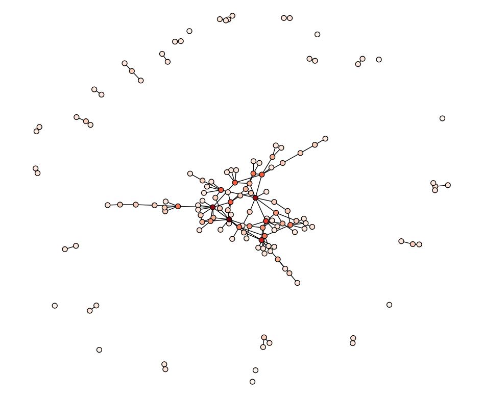
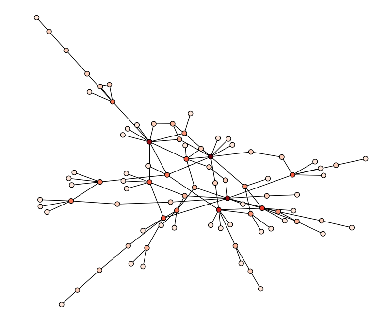
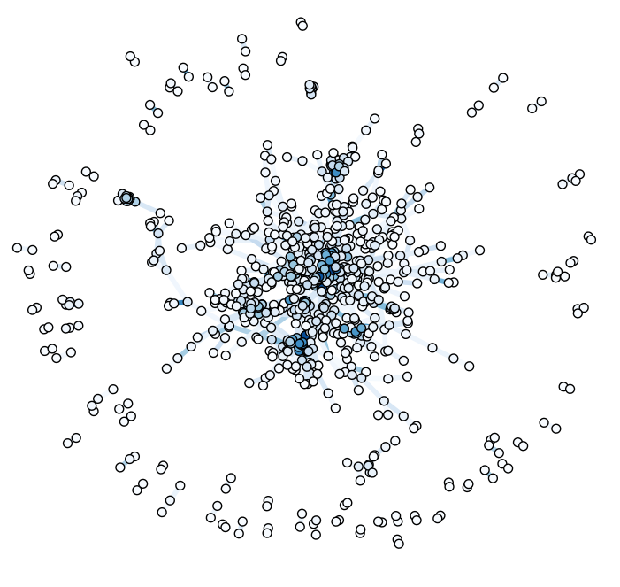
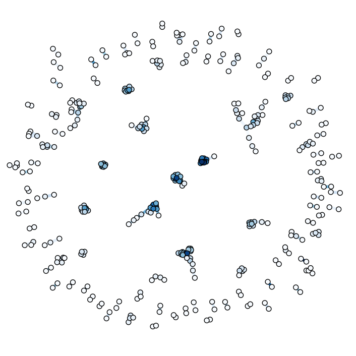
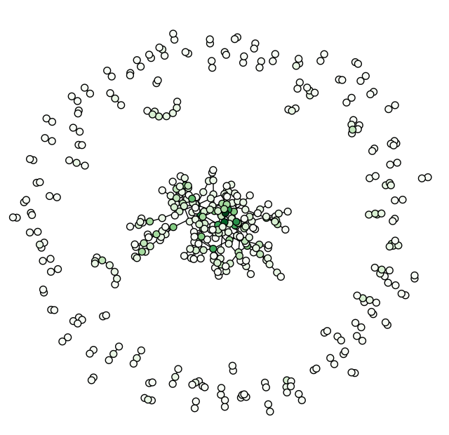
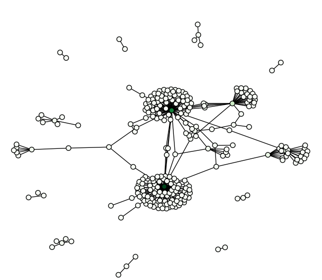

Mining the Last Hope
Rob Zinkov
2010-07-05
With The Next Hope less than two weeks away, its a great to look back at The Last Hope and the data that was collected during it. This article will explore what was released to the public and some of the cool data mining that is possible with this data.
Getting the data
To start we can obtain this data from the Crawdad wireless dataset project. The last hope data can be found at http://crawdad.org/meta.php?name=hope/amd
In browsing the dataset we will concentrate on different files as we need to relate users in different ways. As this data is heavily normalized, we will usually need two or three files to get at the relationships we are interested in.
Some of the more interesting csv files are:
- creation.csv - This file records when a user created an account, and which registration code they used.
- person.csv - This is the profile record. It contains the user’s handle, their stated age, gender, location, cell provider, etc. None of this data is verified or validated. This is data is useful for labeling and getting beyond user ids. Many of these handles are designed to be recognized. Mining forums for these handles could tell us more about the user.
- ping.csv - This file records everybody that pinged somebody else and when they did it. Think of this like Facebook’s “poke” feature.
- position_snapshot.csv - This file records what zone each user is twice a minute.
- talk_presense.csv - This file joins user locations with where talks were being held to infer which talks a user attended. This can be further used with talks.csv to link users with talk descriptions and interests associated with a talk.
Pings graph
One of the simplest things we can do is start by observing that people are connected by the pings they send each other. We can make a graph of the conference attendees, using these pings as edges. In the following examples I will be using a python library networkx to analyze and display our graphs. To draw the graphs you will need matplotlib.
Loading this graph is fairly trivial:
#!/usr/bin/env python
import networkx as nx
import csv
import matplotlib.pylab as plt
reader = csv.reader(file("ping.csv"))
headers = reader.next()
G = nx.Graph()
for line in reader:
G.add_edge(line[0],line[1])
nx.draw_spring(G,
node_color=[float(G.degree(v)) for v in G],
node_size=40,
with_labels=False,
cmap=plt.cm.Reds,
)
plt.show()Running this code, greets us with a graph similar to the one below. 
This display shows that there is a main social network that the majority of users belong. The rest of the users are mostly in their own disjointed cliques. Zooming in we see the structure of the main clique. 
Careful observation shows there are a few key users through which users are connected. These users might play a role in the hacker social scene. Unfortunately, there are too few nodes and edges to deduce that from the ping network. We will instead explore other possible graphs to find that out.
Talks graph
Another way we can link users is if they attended many of the same talks. The relevant code to create this weighted graph is
def jaccard(a, b):
c = a.intersection(b)
return float(len(c)) / (len(a) + len(b) - len(c))
def load_talk_graph():
reader = csv.reader(file("talk_presence.csv"))
headers = reader.next()
talks_seen = {}
G = nx.Graph()
for line in reader:
if line[0] not in talks_seen:
talks_seen[line[0]] = set(line[1])
else: talks_seen[line[0]].add(line[1])
for t in talks_seen:
for u in talks_seen:
if t is not u:
weight = jaccard(talks_seen[t],
talks_seen[u])
if weight > 0.4:
G.add_edge(t,u,weight=weight)
pos = nx.spring_layout(G,weighted=True)
nx.draw(G,
pos,
edge_color=[float(G[e1][e2]['weight']+0.1) for e1,e2 in G.edges()],
width=4,
node_size=40,
edge_cmap=plt.cm.Blues,
with_labels=False,
node_color=[float(G.degree(v)) for v in G],
cmap=plt.cm.Blues,
)
print "Nodes:%d Edges: %d\n" % (len(G.nodes()),len(G.edges()))
plt.show()
Out[1]: Nodes:822 Edges: 1903This code computes the jaccard index as defined by the set of talks they attended. Then uses them as edge weights. Darker edges mean stronger links. Due to the sheer number of weights, edges are only added if similarity is above a certain threshold. Below is a thumbnail of the resulting graph. 
{kind=link}
The full-size graph is worth study as it reveals the subtle and detailed structure implicit in this network. If we only accept weights at 0.5 and above, the clusters are even more apparent. 
This graph reveals a great deal about our attendees, but its biased towards those that went to talks. To get a more complete picture, we need to make more use of our data.
Locations graph
The principles that applied to linking by talks applies to linking by zones. Ideally the (x,y,z) tuples would have been preserved and a cumulative euclidian distance could have been used. We netheless can extract useful insights from just what we have.
def load_location_graph():
reader = csv.reader(file("position_snapshot.csv"))
headers = reader.next()
last_time = ""
zones = {}
edges = {}
nodes = {}
for line in reader:
nodes[line[1]] = nodes.get(line[1],0)+1
if line[0] != last_time:
for z in zones:
for i in zones[z]:
for j in filter(lambda x: x!=i,zones[z]):
edges[(i,j)] = edges.get((i,j),0)+1
edges[(j,i)] = edges.get((j,i),0)+1
last_time = line[0]
zones = {}
else:
zones[line[2]] = zones.get(line[2],set()).union([line[1]])
G = nx.Graph()
for (e1,e2) in edges:
weight = edges[(e1,e2)]/(nodes[e1]+nodes[e2]-edges[(e1,e2)])
if weight > 0.08:
G.add_edge(e1,e2,weight=weight)
print "Nodes:%d Edges: %d\n" % (len(G.nodes()),len(G.edges()))
pos = nx.spring_layout(G,weighted=True)
nx.draw(G,
pos,
node_size=40,
with_labels=False,
alpha = 0.5,
node_color=[float(G.degree(v)) for v in G],
cmap=plt.cm.Greens,
)
plt.show()The location graph drawn in a similar way as the talk graph is amazingly dense and hard to read. The weight variable had to be tuned to see anything at all. 
{kind=link}
Instead we opt for a slightly different metric, and are rewarded with additional insight. Sadly, its not clear if this graph accurately reflects what is going on. Further analysis is clearly required before we can confidently assert anything more about this graph.
Changing:
# weight = edges[(e1,e2)]/(nodes[e1]+nodes[e2]-edges[(e1,e2)])
weight = edges[(e1,e2)]/min(nodes[e1],nodes[e2])
Similar graphs can be drawn for overlaps in interest data and anything else we can use to relate users.
Centrality metrics
For the rest of this article, we will use the talks graph for our analysis. One of the simplest things we can ask is who are the interesting users. The people connected to the most other people. Centrality metrics attempt to get at this notion of importance. I will just be running the standard centrality algorithms that come with networkx, and hence will just show output.
by degree - people with the most edges connected to them
techDarko autoexec daravinne testuser aestetix code6 faeriebeliever pa5kl hypo TheFallen Flarocketby betweenness - people that the most graph traffic goes through
HorseShit sloanroyal excimer34 Sidnicious illi mattiewho chucknorris fractal Flarocket cephearby closeness - people that are close to many other nodes
Jaypoc brob orospakr code6 a113n tygarsai illi wolfman1984 fractal sloanroyal Sidnicious faeriebeliever Flarocketby eigenvalue - this is essentially google page rank
cephear pa5kl hypo TheFallen twelve88 FrodoNJ AtomicSunset aestetix n1nj4j0 autoexec daravinne
These are the people at the center of the social network of the last hope. There is further analysis we can do to determine gatekeeper roles, by looking for people with low degree centrality but high betweenness scores. As another note, these are just the top scoring people that bothered to leave their names. Many of the people at the center of these networks are anonymous.
Community detection
Having singled out individual people, an obvious next step is singling out groups of people. There is no standard way to do Community Detection, but there are some decent survey papers on the common approaches. We won’t do anything fancy like Newman-Moore, and instead concentrate on simple algorithms to start.
Cliques
Cliques are sets of nodes in a graph that are all connected to each other. They are also decent for finding social cliques.
cliques = sorted(nx.find_cliques(G),key=len,reverse=True)[:10]
for c in cliques:
c = filter(lambda x: name[x] is not "",c)
print map(lambda x: name[x], c)
['testuser', 'autoexec', 'daravinne', 'n1nj4j0']
['testuser', 'autoexec', 'daravinne', 'n1nj4j0', 'FrodoNJ']
['testuser', 'autoexec', 'daravinne', 'n1nj4j0', 'twelve88']
['testuser', 'autoexec', 'daravinne', 'n1nj4j0', 'aestetix']
['testuser', 'autoexec', 'daravinne', 'n1nj4j0', 'AtomicSunset']
['origami', 'MR H', 'earthling', 'Someone else got my bag', 'Exposure101', 'vol']
['origami', 'MR H', 'earthling', 'Someone else got my bag', 'firstohit']
['origami', 'MR H', 'earthling', 'Someone else got my bag', 'dvalued']
['origami', 'MR H', 'earthling', 'Someone else got my bag']
['EJL', 'devolut', 'moonmaster9000']Connected components
Groups nodes into sets based on whether they are reachable from each other.
parts = nx.connected_components(G)
for p in parts[:10]:
p = filter(lambda x: name[x] is not "",p)
print map(lambda x: name[x], p)
['grapefruit', 'trinisite', 'Flarocket', 'jay', 'bunshri', 'sirloopy', 'orospakr', 'faeriebeliever', 'sloanroyal', 'i80386', 'brob', 'ash', 'LapTop006', 'efk2']
['pmhesse', 'Exposure101', 'origami', 'meee', 'firstohit', 'vol', 'dvalued', 'earthling', 'MR H', 'Someone else got my bag']
['echo', 'Rop', 'THE NIGHTSTALKER', 'techDarko', 'kupo', 'bigjosh', 'Bunni3burn', 'shogun', 'bocci']
['Milosch', 'testuser', 'autoexec', 'daravinne', 'AtomicSunset', 'FrodoNJ', 'n1nj4j0', 'twelve88', 'aestetix']
['roadtrip', 'moonmaster9000', 'EJL', 'devolut', 'pv2k', 'nightarrow', 'HorseShit']
['serif', 'wazntme379', 'Vyrus', 'caselaredo']
['fddi', 'MissInformation', 'das', 'fenrir', 'Cyanide', 'catfish', 'asciimo']
['jesse', 'missdellion', 'jefigun']
['benkudria', 'bockman']Protovis graph
These visualizations have shed light on the nature of the attendees at the last hope. Still, sometimes we want a more interactive way of working with these networks. So let’s pop the talk graph into protovis and display it.
Due to the size of the graph. I am displaying it on a separate page. Click the image to get to the full display.

More at The Next Hope
These are some of the more basic techniques you can apply to this data. Also, we are somewhat limited by what is available to us. What is possible when we know more about our attendees? What is possible when we apply for advanced algorithms? You can find out by coming to The Next Hope, July 16th to July 18th at the Hotel Pennsylvania in New York City.